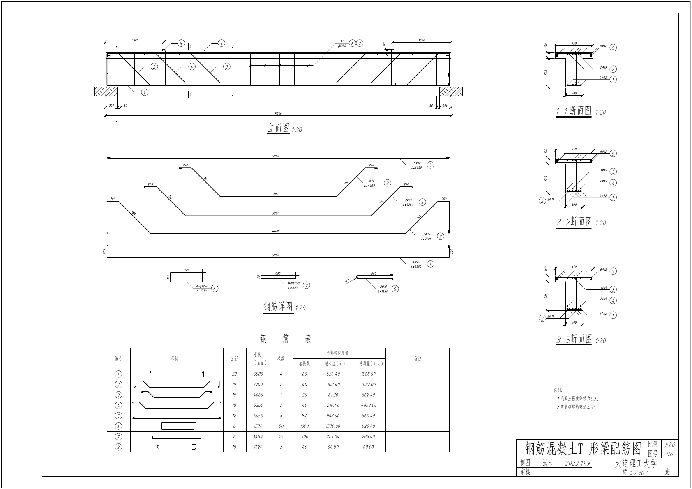

专题教学 · 配筋识图
钢筋混凝土 T 形梁
对照立面图、钢筋详图和 1—1、2—2、3—3 断面图，逐层观察梁体与钢筋的空间关系。
梁长5950 mm
翼缘宽650 mm
翼缘厚100 mm
腹板宽300 mm
翼缘下高500 mm
空间模型
旋转观察 · 分层查看
梁长在三维展示中压缩，仅用于辨认空间位置；实际尺寸以原图为准。
透视 23%
对照原图
立面、钢筋详图与断面

图纸标注：混凝土强度等级 C35；弯起钢筋均弯起 45°。页面的三维视图用于学习识图，钢筋数量、下料长度与构造细节以原图为准。